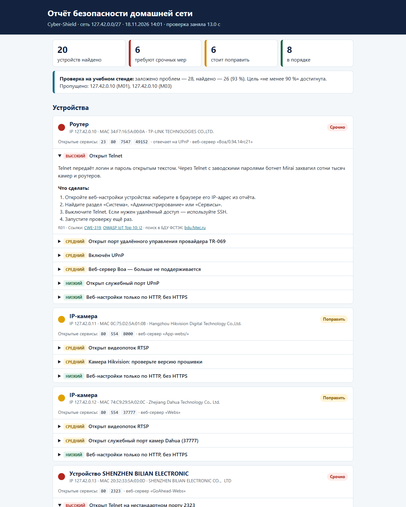

Проверяйте только свою сеть. Сканировать можно только собственную домашнюю сеть или сеть, владелец которой разрешил проверку (ст. 272 УК РФ). Программа сама ограничивается подсетью своего компьютера, спрашивает подтверждение, не входит на устройства и не подбирает пароли. Все данные остаются на компьютере пользователя, ничего не отправляется в интернет.
Проблема
В домашней сети десятки подключённых устройств: роутер, IP-камеры, умные розетки, принтер, телевизор, мини-компьютер. Каждое открывает свои сетевые сервисы, и не все из них безопасны. Человеку без технической подготовки трудно понять, что именно доступно в его сети и что с этим делать.
На учебном стенде такими находками стали открытый Telnet на роутере, включённый UPnP, видеопоток RTSP у камер, панели управления только по HTTP без HTTPS, FTP и MQTT без шифрования. Все они есть в примере отчёта.
Что делает Cyber-Shield
Находит устройства
Определяет устройства в своей подсети, их открытые сервисы и производителя по MAC-адресу.
Сверяет с базой рисков
База из 28 типовых рисков домашних устройств со ссылками на CVE, БДУ ФСТЭК и OWASP.
Объясняет простым языком
К каждой проблеме — уровень (высокий, средний, низкий) и шаги «что сделать».
Не выходит за границы
Не входит на устройства, не подбирает пароли и ничего не отправляет в интернет.
Как это работает
- Своя подсетьОпределяет подсеть компьютера и отказывается работать с чужими и публичными адресами.
- Поиск устройствНаходит устройства, открытые сервисы и производителя по MAC-адресу.
- Сверка с базойСверяет находки с базой из 28 рисков со ссылками на CVE, БДУ ФСТЭК и OWASP.
- HTML-отчётСобирает отчёт: «светофор» по устройствам и пошаговые советы простым языком.
Перед началом проверка спрашивает подтверждение, а после — показывает, у каких устройств всё в порядке.
 Увеличить
Увеличить
Пример отчёта

Увеличить Увеличить
Увеличить
Адреса условные: это учебный стенд.
Результат на учебном стенде (20 виртуальных устройств)
- 92,9 %найдено заложенных проблем (26 из 28), цель ≥ 90 %
- 13 спроверка 20 устройств, цель — меньше 5 мин
- 20 / 20устройств «зелёные» после исправления
 Увеличить
Увеличить
Стенд виртуальный (эмулятор сервисов на этом же компьютере). Проверка на реальном оборудовании и на пользователях без технической подготовки ещё впереди.
Стек
- Сканер. Запускается из консоли одной командой; в демо-режиме берёт записанный паспорт учебного стенда, поэтому адреса в примере условные.
- База рисков. 28 типовых проблем; у каждой — ссылки на CVE, БДУ ФСТЭК или OWASP.
- Отчёт. Обычный HTML-файл: «светофор», шаги «что сделать» и галочки «проверьте сами», которые сохраняются в браузере.
- Сайт. Статические HTML, CSS и JavaScript — без сборщика и без внешних библиотек.
Команда из демо-записи:
python run.py demo